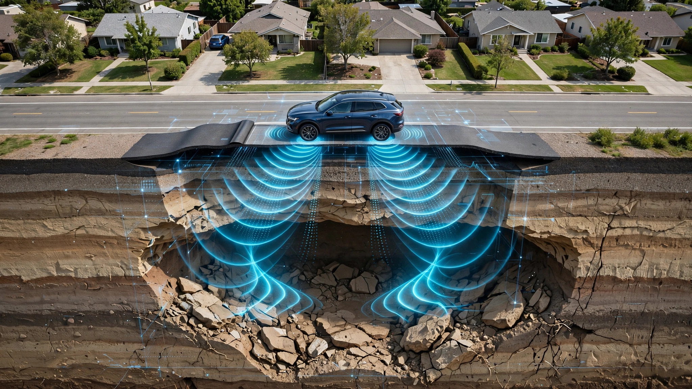

System and Method for Predictive Sinkhole Detection and Progressive Road Subsidence Monitoring Using Crowdsourced Vehicle Suspension Displacement Telemetry and Temporal Surface Deformation Analysis

Abstract
Disclosed is a system and method for detecting progressive road subsidence and predicting sinkhole collapse events by aggregating suspension displacement telemetry from factory-equipped consumer vehicles traversing public road networks. Modern vehicles equipped with electronically controlled suspension systems (air suspension, adaptive dampers, magnetorheological units) contain high-resolution displacement sensors at each corner that measure wheel-to-body distance at 50-200 Hz with sub-millimeter precision. When multiple vehicles traverse the same road segment over days and weeks, their suspension displacement data, GPS-correlated and normalized for vehicle mass, speed, and suspension configuration, produces a time-series road surface elevation profile for each segment. A cloud-based analytics platform applies temporal differencing to these profiles, using a physics-informed machine learning model trained on geotechnical failure modes (karst dissolution, pipe-break washout, mine subsidence, clay shrinkage) to distinguish progressive void-driven subsidence from benign surface deformation (thermal expansion, frost heave, repaving). The system generates georeferenced risk maps with probabilistic time-to-collapse estimates, enabling municipal authorities to prioritize ground-penetrating radar surveys and preemptive repair before catastrophic road failure.
Field of the Invention
This invention relates to geotechnical monitoring and road infrastructure safety, specifically to the detection of subsurface void formation beneath paved roads using passively collected vehicle suspension sensor data and machine learning-based temporal deformation analysis.
Background
Road sinkholes cause an estimated $300 million in annual damages in the United States alone (USGS), with approximately 300 major road collapse events per year across the country. Florida, Texas, Pennsylvania, and Tennessee account for disproportionate shares due to underlying karst geology. Globally, urban sinkholes are increasing in frequency: Gutiérrez et al. (2014) documented a rising trend in anthropogenic sinkholes driven by aging water infrastructure, increased groundwater extraction, and construction-induced vibration.
Current detection methods are expensive, episodic, and reactive:
- Ground-penetrating radar (GPR): Truck-mounted GPR surveys cost $1,500-5,000 per lane-mile and require dedicated survey vehicles with trained operators. Municipalities typically survey each road segment once every 3-10 years. Most sinkholes form and collapse between survey intervals. NCHRP Synthesis 502 (2017) found that fewer than 15% of U.S. municipalities conduct subsurface surveys at intervals shorter than 5 years.
- Interferometric Synthetic Aperture Radar (InSAR): Satellite-based InSAR can detect surface deformation at millimeter resolution over wide areas. However, temporal resolution is limited by satellite revisit periods (6-12 days for Sentinel-1), spatial resolution is 5-20 meters (insufficient for road-segment-level analysis), and urban multipath reflections introduce noise that masks small-magnitude subsidence. VDOT's InSAR pilot (2018) achieved useful detection for large-scale subsidence but missed the localized, rapid-onset voids that cause most urban road sinkholes.
- Embedded sensors: Fiber-optic strain sensors, tiltmeters, and piezometers installed beneath road surfaces can detect void formation in real time but cost $10,000-50,000 per instrumented segment. Economic only for critical infrastructure (airports, bridge approaches). FHWA-HRT-16-064 concluded that embedded monitoring is not scalable to the 4.19 million miles of U.S. public roads.
- Visual inspection: Human inspectors identify surface indicators (cracking patterns, localized settlement, pavement distress) during routine maintenance patrols. Detection depends on inspector experience and weather conditions. Surface indicators often appear only 24-72 hours before collapse, providing insufficient lead time for remediation.
Separately, crowdsourced road condition monitoring using vehicle-mounted or smartphone accelerometers has been demonstrated for pothole detection and road roughness estimation. MIT's Carbin system (2021) achieved 90% accuracy in predicting laser-profiler roughness measurements from smartphone accelerometer data. Cafiso et al. (2022) demonstrated machine-learning-based pothole classification from low-cost accelerometers. However, these systems detect only surface anomalies that already exist; they cannot identify subsurface voids before the surface fails.
The gap in the art is: (a) no existing system repurposes the high-precision suspension displacement sensors already present in factory-equipped consumer vehicles for infrastructure monitoring; (b) no system performs temporal differencing of road surface profiles across multiple fleet traversals to detect progressive subsidence; (c) no system applies geotechnical failure-mode classification to crowdsourced deformation data to distinguish sinkhole precursors from benign surface changes; and (d) no system generates probabilistic time-to-collapse estimates from passively collected vehicle data.
Detailed Description
1. Data Acquisition from Factory-Equipped Suspension Sensors
Modern vehicles equipped with electronically controlled suspension (ECS) systems contain precision displacement sensors that measure the vertical distance between each wheel assembly and the vehicle body. These sensors are standard equipment on vehicles with:
- Air suspension: Tesla Model S/X (4 ride-height sensors, 100 Hz, ±0.5 mm resolution), Mercedes-Benz AIRMATIC (4 sensors, 50 Hz), Range Rover (4 sensors, 100 Hz), BMW 7-Series (4 sensors), Rivian R1S/R1T (4 sensors, 200 Hz), Lucid Air (4 sensors).
- Magnetorheological dampers: GM MagneRide (accelerometers + position sensors at each corner, 1000 Hz sampling for the accelerometers, 200 Hz for position), BWI Group MagneRide systems across Cadillac, Corvette, and various Audi/Ferrari models.
- Adaptive hydraulic dampers: Porsche PASM (4 acceleration sensors + 4 body sensors, 100 Hz), BMW Adaptive M Suspension, Volvo Four-C.
These sensors are distinct from aftermarket smartphone accelerometers in three critical ways. First, they measure absolute wheel-to-body displacement, not body acceleration, providing a direct measurement of road surface deviation rather than a convolved signal. Second, their mounting is mechanically rigid and calibrated by the OEM, eliminating the orientation uncertainty and coupling variability of loosely mounted smartphones. Third, their sampling rates and precision exceed smartphone accelerometers by 1-2 orders of magnitude for the displacement measurement that matters: vertical surface profile. A single traversal by a vehicle with 4-corner suspension sensors at 100 Hz and 30 mph produces approximately 440 displacement measurements per meter of road, per wheel track.
Data is extracted from vehicles via: (a) OEM telematics APIs (Tesla Fleet API, GM OnStar API, Rivian Cloud, Mercedes me connect, BMW ConnectedDrive), which already transmit suspension state data for remote diagnostics; (b) OBD-II diagnostic ports via aftermarket dongles (e.g., Comma.ai Panda, OBDLink MX+, Autopi) that read suspension-related CAN bus PIDs; or (c) OEM partnership agreements providing bulk anonymized suspension telemetry. Each data packet contains: timestamp (GPS-synchronized, microsecond resolution), GPS position (latitude, longitude, ±1.5 m), speed, 4-channel suspension displacement values, accelerometer readings (3-axis body, 3-axis wheel where available), steering angle, and vehicle identification metadata (make, model, curb weight, suspension type, tire size).
2. Road Segment Indexing and Profile Construction
The system partitions all public roads into fixed-length segments using a geospatial grid. Each segment is defined by a center-line polyline derived from OpenStreetMap or HERE HD Live Map data. Segment length is configurable, defaulting to 10 meters for urban roads and 25 meters for highways. Each segment has a unique segment ID, and segments are indexed in an R-tree spatial database for fast lookup.
When a vehicle traverses a segment, the system: (a) maps each GPS-timestamped suspension displacement sample to the segment using perpendicular projection onto the center-line polyline; (b) computes the lateral offset from center-line to determine which wheel track (left or right) the sample represents; (c) applies a vehicle-specific transfer function to convert raw suspension displacement into estimated road surface elevation relative to a datum. The transfer function accounts for curb weight, passenger/cargo load estimate (derived from static ride height at rest), tire spring rate, suspension geometry (double-wishbone vs. multi-link vs. strut), and speed-dependent dynamic effects (aerodynamic lift, damper response lag). Transfer function parameters are stored in a vehicle configuration database populated from OEM specifications and validated via controlled test-track calibration.
Each traversal produces a per-segment surface elevation profile: a 1D array of estimated road surface heights at 2-5 cm longitudinal resolution, in two lateral tracks (left and right wheel paths). Profiles are stored with traversal metadata: timestamp, vehicle ID (anonymized), speed, ambient temperature, and quality metrics (GPS accuracy, sensor health flags). A minimum of 10 valid traversals per calendar week is required before a segment enters the monitoring pipeline.
3. Temporal Deformation Analysis
The core innovation is temporal differencing of road surface profiles to detect progressive subsidence that precedes sinkhole collapse.
For each monitored segment, the system maintains a rolling baseline profile computed as the robust mean (Huber M-estimator, breakdown point 0.25) of all traversal profiles within a 90-day reference window. The reference window advances weekly. New traversal profiles are differenced against the baseline to produce a deformation signal: Δh(x, t) = h_traversal(x, t) - h_baseline(x), where x is longitudinal position within the segment and t is traversal timestamp.
The deformation signal is processed through three analysis stages:
Stage 1: Noise reduction and outlier rejection. Individual traversal deformation signals are filtered using a Savitzky-Golay filter (window 51 samples, polynomial order 3) to remove high-frequency tire-enveloping effects. Traversals with deformation signals exceeding 4σ of the segment's historical variance are flagged as outliers (vehicle malfunction, load anomaly, GPS error) and excluded from aggregation.
Stage 2: Deformation rate estimation. For each longitudinal position x within the segment, the system fits a piecewise linear model to the time series of Δh(x, t) values using RANSAC regression. This produces: a deformation rate dh/dt (mm/day) at each position, a change-point detection output identifying when the deformation rate accelerated (indicating transition from stable to active subsidence), and confidence intervals on both rate and change-point estimates.
Stage 3: Spatial coherence analysis. A subsurface void produces a characteristic spatial deformation pattern: a bowl-shaped depression with smooth lateral gradients, distinct from the sharp edges of a pothole or the uniform slope of frost heave. The system computes a 2D deformation field by combining left and right wheel-track profiles, and fits a parametric sinkhole subsidence model (Gaussian trough, after Peck (1969); or influence function model, after Kratzsch (1983)) to the observed deformation field. The quality of fit (R² > 0.6, RMSE < 2 mm) is a strong indicator that the deformation is void-driven rather than surface-only.
4. Geotechnical Failure Mode Classification
A physics-informed neural network (PINN) classifies each detected deformation anomaly into one of six geotechnical failure modes:
- Karst dissolution: Gradual dissolution of limestone or dolomite bedrock by acidic groundwater, producing subsurface cavities. Characterized by smooth, circular deformation patterns with slow onset (months to years) and accelerating rate. Geologically constrained to known karst regions (approximately 20% of U.S. land area, USGS Karst Map).
- Pipe-break washout: Erosion of supporting soil around a broken water main, sewer, or storm drain. Produces asymmetric, elongated deformation aligned with the buried pipe azimuth. Onset is rapid (days to weeks) with constant or decelerating rate as the void reaches equilibrium. Correlates with municipal GIS pipe-age data (U.S. water infrastructure averages 47 years old, AWWA).
- Mine subsidence: Collapse of abandoned mine workings beneath developed areas. Produces large-scale, elongated deformation following mine panel geometry. Constrained to known mining regions (Pennsylvania, West Virginia, Illinois, Kentucky). Onset is variable; progressive cases show steady linear rates.
- Construction-induced settlement: Consolidation of fill or natural soil under new loading (adjacent building construction, embankment). Produces broad, gradual deformation centered near the loading source. Rate follows Terzaghi consolidation theory: logarithmic decay.
- Clay shrinkage/expansion: Seasonal volume change in expansive clay soils due to moisture fluctuation. Produces uniform, reversible deformation correlated with soil moisture and precipitation data. Strongest in regions with high-plasticity clays (Texas Gulf Coast, Colorado Front Range, parts of California). The system ingests NOAA precipitation data and USDA SSURGO soil data to model expected seasonal patterns.
- Frost heave: Seasonal uplift of road surfaces due to ice lens formation in frost-susceptible soils. Produces uniform uplift (positive deformation) in winter and subsidence in spring. Geographically and seasonally constrained.
The PINN architecture encodes geotechnical domain knowledge as soft constraints in the loss function. For each failure mode, a physics module generates a predicted deformation trajectory given the mode-specific parameters (void depth, diameter, overburden thickness, soil type, groundwater level). The neural network learns residual corrections to the physics predictions from training data. Training data sources include: FHWA Long-Term Pavement Performance (LTPP) database (InfoPave, 2,509 test sections, 30+ years), published sinkhole case studies with pre-collapse survey data, and synthetic data generated by finite-element geomechanical simulation (FLAC3D, PLAXIS) of void growth scenarios.
The classifier outputs a probability vector over the six modes, a maximum-likelihood void geometry estimate (depth, diameter, overburden thickness), and a probabilistic time-to-surface-failure estimate derived from the failure-mode-specific progression model. Time-to-failure is reported as a probability density function, not a point estimate, with explicit uncertainty bounds reflecting data coverage (number of traversals, temporal span) and model uncertainty.
5. Risk Map Generation and Alert System
The system generates a georeferenced risk map updated daily, displaying each monitored road segment color-coded by sinkhole risk level:
- Green (normal): No statistically significant deformation detected (deformation rate < 0.1 mm/month, p > 0.05).
- Yellow (watch): Statistically significant deformation detected but rate is below critical threshold and/or spatial pattern is ambiguous. Recommended action: increase monitoring frequency.
- Orange (warning): Deformation rate exceeds 1 mm/month with spatial coherence consistent with void-driven subsidence (R² > 0.6). Recommended action: dispatch GPR survey within 30 days.
- Red (critical): Deformation rate exceeds 5 mm/month and/or rate is accelerating and/or estimated time-to-failure probability exceeds 10% within 90 days. Recommended action: emergency GPR survey and traffic restriction within 72 hours.
Alert notifications are delivered to municipal road authorities via: REST API integration with existing asset management systems (Cartegraph, CityWorks, Lucity), email/SMS push alerts for critical-level segments, and a GIS dashboard (Mapbox/ESRI compatible) with drill-down to individual segment deformation histories. Each alert includes: segment location (coordinates, nearest address, road name), classified failure mode with confidence, deformation time series plot, estimated time-to-failure distribution, recommended action (GPR survey, utility coordination, traffic restriction), and a data provenance summary (number of contributing vehicles, temporal coverage, data quality score).
6. Privacy Architecture
Vehicle-level data is anonymized at the point of collection using k-anonymity (k ≥ 5) on spatial-temporal trajectories. Individual vehicle IDs are replaced with rotating pseudonyms that reset every 24 hours. Raw GPS traces are snapped to road segments and the original trajectory is discarded. The system stores only per-segment aggregated profiles, not individual vehicle paths. Differential privacy (ε = 1.0) is applied to all published risk maps to prevent re-identification of individual vehicle contributions. No personally identifiable information is retained after the profile aggregation step.
7. Figures Description
- Figure 1: System architecture showing data flow from vehicle suspension sensors through OEM telematics APIs to the cloud aggregation platform, temporal analysis pipeline, and risk map output.
- Figure 2: Diagram of a representative suspension corner showing the displacement sensor position, measurement axis, and the geometric relationship between sensor output, wheel travel, and road surface elevation.
- Figure 3: Time-series plot of Δh(x, t) for a representative road segment showing progressive subsidence over 60 days, with annotated change-point detection marking the transition from stable to active deformation, alongside the fitted Peck Gaussian trough model.
- Figure 4: Comparison of deformation spatial signatures for each of the six classified failure modes, showing the characteristic bowl shape of karst dissolution versus the elongated asymmetry of pipe-break washout versus the uniform pattern of frost heave.
- Figure 5: Risk map visualization of a 10 km² urban area showing segment-level color coding, with drill-down example for a red-flagged segment displaying the deformation history, classified failure mode (pipe-break washout), and time-to-failure probability distribution.
Claims
- A system for detecting progressive road subsidence and predicting sinkhole collapse, comprising: a data ingestion module that receives suspension displacement telemetry from a plurality of factory-equipped consumer vehicles, each equipped with electronically controlled suspension displacement sensors measuring wheel-to-body distance at each corner; a road segment indexing module that maps GPS-correlated displacement samples to fixed-length road segments; a profile construction module that applies vehicle-specific transfer functions to convert raw displacement data into estimated road surface elevation profiles; and a temporal analysis module that computes deformation rates by differencing traversal profiles against rolling baseline profiles for each segment.
- The system of claim 1, wherein the vehicle-specific transfer function accounts for curb weight, estimated passenger and cargo load, tire spring rate, suspension geometry, and speed-dependent dynamic effects to normalize measurements across heterogeneous vehicle types.
- The system of claim 1, further comprising a geotechnical failure mode classifier implemented as a physics-informed neural network that classifies each detected deformation anomaly into one of a plurality of failure modes including karst dissolution, pipe-break washout, mine subsidence, construction-induced settlement, clay shrinkage, and frost heave.
- The system of claim 3, wherein the physics-informed neural network encodes failure-mode-specific geomechanical models as soft constraints in the loss function, with the neural network learning residual corrections to physics predictions from training data including the FHWA Long-Term Pavement Performance database and finite-element geomechanical simulations.
- The system of claim 1, further comprising a spatial coherence analysis module that fits parametric sinkhole subsidence models to the observed 2D deformation field constructed from left and right wheel-track profiles to distinguish void-driven subsidence from surface-only deformation.
- The system of claim 3, further comprising a time-to-failure estimation module that outputs a probability density function for time to surface collapse based on the classified failure mode, estimated void geometry, deformation rate, and rate-of-change of deformation rate.
- The system of claim 1, further comprising a risk map generation module that assigns each monitored road segment a risk level based on deformation rate, spatial coherence, classified failure mode confidence, and estimated time-to-failure, and delivers georeferenced alerts to municipal road authorities via API integration with existing asset management systems.
- A method for predicting road sinkhole events comprising: collecting suspension displacement telemetry from a fleet of consumer vehicles equipped with factory-installed electronically controlled suspension displacement sensors; constructing per-segment road surface elevation profiles by applying vehicle-specific transfer functions to the collected telemetry; computing temporal deformation signals by differencing traversal profiles against rolling baseline profiles; detecting progressive subsidence by fitting deformation rate models with change-point detection; classifying deformation anomalies by failure mode using a physics-informed machine learning model; and generating probabilistic time-to-collapse estimates for segments exhibiting void-driven subsidence patterns.
- The method of claim 8, wherein the change-point detection identifies transitions from stable to active subsidence by detecting statistically significant increases in deformation rate using piecewise linear RANSAC regression on the deformation time series.
- The method of claim 8, further comprising a noise reduction step that applies outlier rejection to exclude traversals exhibiting deformation signals exceeding 4σ of historical variance, attributable to vehicle malfunction, anomalous loading, or GPS error.
- The system of claim 1, further comprising a privacy module that anonymizes vehicle-level data using k-anonymity on spatial-temporal trajectories with rotating pseudonyms, discards raw GPS traces after road-segment snapping, and applies differential privacy to published risk maps to prevent re-identification of individual vehicle contributions.
Implementation Notes
A minimum viable deployment requires partnership with one OEM telematics provider or aftermarket OBD-II platform. Tesla's Fleet API already exposes ride height data for fleet-managed vehicles. GM's OnStar diagnostics platform transmits suspension fault codes that include displacement values. A pilot deployment in a karst-prone city (e.g., Tampa, FL or Harrisburg, PA) with 500-1,000 participating vehicles covering the urban road network would provide sufficient data density for meaningful subsidence detection within 90 days of deployment. Estimated cost of the cloud analytics platform: $50,000/year for compute and storage for a city of 500,000 population. This compares to $2-5 million/year for equivalent GPR survey coverage of the same road network at 3-year intervals.
Prior Art References
- USGS Sinkhole Information — Overview of sinkhole causes, distribution, and estimated damages in the U.S.
- Gutiérrez et al., Engineering Geology (2014) — Rising trend in anthropogenic sinkholes driven by aging infrastructure
- NCHRP Synthesis 502 (2017) — Subsurface survey practices by U.S. municipalities
- VDOT InSAR Pilot Study (2018) — Satellite-based subsidence detection for transportation infrastructure
- FHWA-HRT-16-064 — Embedded sensor monitoring scalability assessment
- MIT Carbin (2021) — Crowdsourced road roughness estimation from smartphone accelerometers
- Cafiso et al. (2022) — Machine-learning pothole classification from low-cost accelerometers
- Peck (1969) — Gaussian trough model for ground subsidence above tunnels and voids
- Kratzsch (1983) — Influence function method for mining subsidence prediction
- FHWA InfoPave LTPP Database — Long-Term Pavement Performance data (2,509 test sections, 30+ years)
- USGS Karst Map of the United States — Geospatial karst region data
- AWWA Infrastructure Financing — U.S. water infrastructure age statistics
- US20140195112A1 — Adaptive active suspension system with road preview (uses suspension sensors for ride control, not infrastructure monitoring)
- ASTM JTE (2018) — Rolling Dynamic Deflectometer for sinkhole assessment (dedicated survey equipment, not crowdsourced)